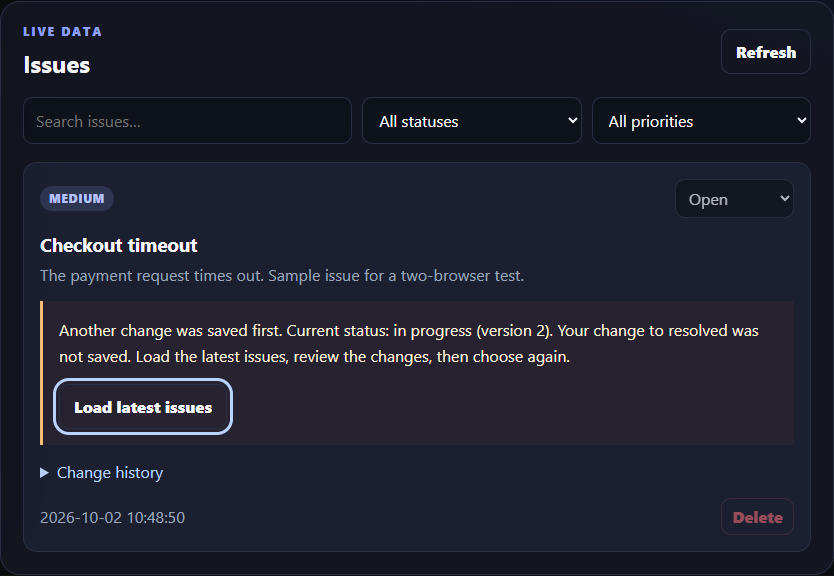

Backend, webbgränssnitt & tester
IssuePilot
Två personer ändrar samma ärende. Vems ändring sparas?
I IssuePilot har jag lagt till versionskontroll som stoppar en gammal flik från att skriva över nyare ändringar. Gränssnittet visar konflikten och låter användaren granska innan ett nytt försök. Tester kör flödet i två separata webbläsarsessioner.
FastAPI · SQLite · JavaScript · Pytest